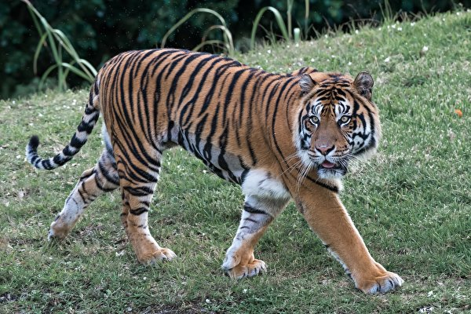

_by_Китоно.jpg)
Самая крупная кошка
Самая большая и самая грозная из крупных кошек - это тигр. Варослые амурские тигры достигают в длину трех с половиной метра. А весит тигр более трехсот килограммов. Но это самые крупные животные. Южные, бенгальские тигры гораздо мельче. Весит они не более 225 килограммов. Принято считать, что родина тигров Юго-Восточная Азия, откуда они более 10 тысяч лет назад расселились к северу, дойдя до Уссурийского края и Приамурья. Кроме Дальнего Востока тигры жили по всей Индии, на островах Малайского архипелага и на островах Суматра, Ява и Бали.
Но сейчас тигры стали очень редкими животными. В Индии их осталось всего 2 тысячи. А еще совсем недавно было более 20 тысяч. На Суматре, Яве и Бали темный островной тигр исчез совсем. Хищническая охота поставила это великолепное животное на грань вымирания.
Голодный тигр готов сожрать буквально все, что встречает на пути. Меню тигра очень разнообразно, здесь есть олени, дикие быки, домашние коровы, буйволы, обезьяны, каба ны, медведи, барсуки, рыси, волки, крабы, рыба, саранча, термиты, змеи, лягушки, мыши, трава и даже земля и древесная кора. Бывали случаи, когда тигры нападали на крокодилов, питонов и леопардов. Тигр, если вконец оголодает, может позавтракать и своим сородичем. Встречаются и тигры-людоеды. Это бывает очень редко, но если такой злодей объявится, то целые районы теряют покой, пока он не будет убит.
В зоопарке или в цирке тигр кажется очень ярким зверем. Но на воле оранжевая с черными полосами шкура очень хорошо его маскирует. Тигр-охотник-одиночка. Даже вместе с самкой он охотится не больше недели, после чего они расходятся. Тигр - вечный бродяга. Он, конечно, метит свою территорию и предупреждает громким ревом, что это его дом, но не надолго. Через несколько недель он опять отправится странствовать. Тигры живут около двадцати лет.
Большинство кошек очень не любит воду. Но это не относится к тиграм. Они просто обожают поплавать. Особенно бенгальские тигры, которые живут в тропиках.
Тигр любит нападать из густого кустарника. Он почти сливается с ним, благодаря окраске. Подкравшись почти вплотную, он бросается на жертву стремительным рывком и убивает ее: вгрызается в горло или ломает шею ударом лапы. Нападая, он никогда не рычит. Удар тигриной лапы страшен и смертоносен. Одним ударом он убивает лошадь. Тигры выходят на охоту вечером, но иногда оголодав охотятся и днем.
Тигрята рождаются слепыми и совсем беспомощными. Но зато к 11 месяцам они уже самостоятельно охотятся. С матерью они остаются до двух лет. Поэтому иногда можно увидеть сразу трех-четырех тигров у добычи.
О тигре существует множество легенд. Одна такая легенда о "призраке джунглей" -белом тигре. И в 1951 в Индии поймали такого тигра. Он был белый с голубыми полосками.
Сейчас тигры взяты под охрану во всем мире. Но удастся ли их спасти от вымирания, пока еще не известно.
